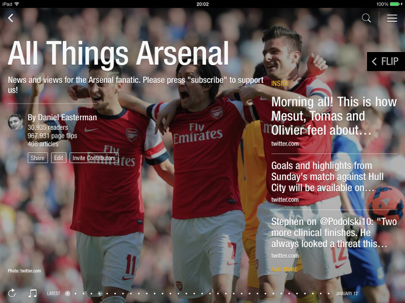
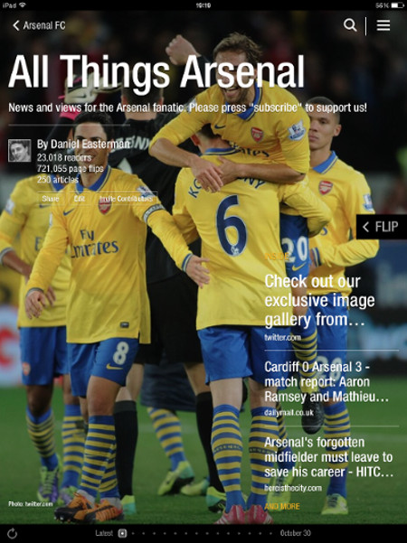
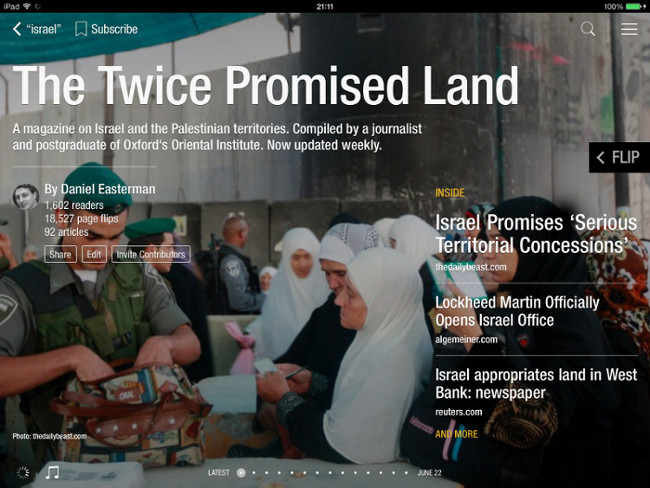

Blindtext
Created "All Things Arsenal" - a curated magazine on Arsenal Football Club with Flipboard. The app reports that the magazine currently has almost 31,000 readers from around the world.

A (Very) Brief History of Flipboard:
In its first incarnation, Flipboard started as a way for people to display the mass of content on the web and social networks on your tablet or mobile device in an aesthetically pleasing magazine format. The layout was deliberately designed to provide an experience similar to a physical magazine by allowing users to “flip” or swipe through content like turning the pages in a traditional magazine.

In March 2012, Flipboard brought out its version 2.0. This new version represented a leap in capability from merely organising social media content in a visual fashion, to providing individuals or institutions with the means to create a magazine on any subject published on the Flipboard platform. Some commentators have likened this to turning anyone into a “magazine publisher” (albeit with limitations).
Industry Involvement:
Some big names in the newspaper industry including the Guardian and the Telegraph launched their own Flipboard magazines even before the official 2.0 release. The Telegraph was one of the earliest adopters bringing out it's own Flipboard afternoon news service called Telegraph PM published every day at 4.30pm. It also maintains a number of other topical magazines on sport, travel and even recipes.
The Twice Promised Land:
Another magazine I created, the Twice Promised Land, which includes curated news and analysis on Israel and the Palestinian territories from around the Internet was featured on the Flipboard company's official blog. The magazine was highlighted as an example of how journalists can use the platform to showcase expertise in a particular subject area.
